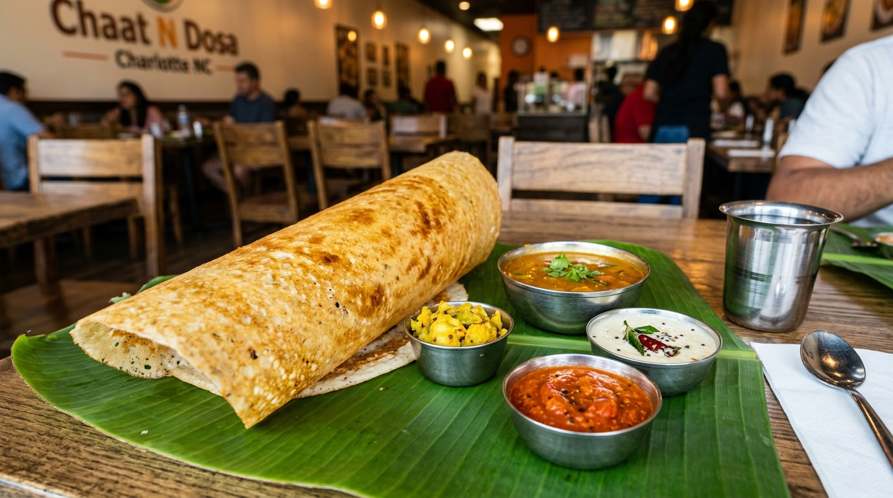

1. Hand-Pleated Flour Enclosures
Thinly rolled wheat flour wrappers are hand-pleated daily around minced meats & mountain herbs.
Himalayan momos require delicate hand-pleating and precise steaming to lock in savory broth. Meanwhile, our clay tandoor oven reaches intense 800°F heat for smoky charred meats and blistered naan bread.

Thinly rolled wheat flour wrappers are hand-pleated daily around minced meats & mountain herbs.
Served with roasted tomato, Sichuan pepper, & toasted sesame chutney for authentic Himalayan warmth.
Charcoal-fired clay tandoor seals in juices rapidly while developing smoky outer char marks.